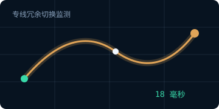
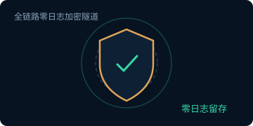
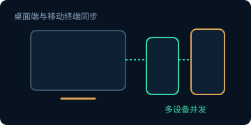
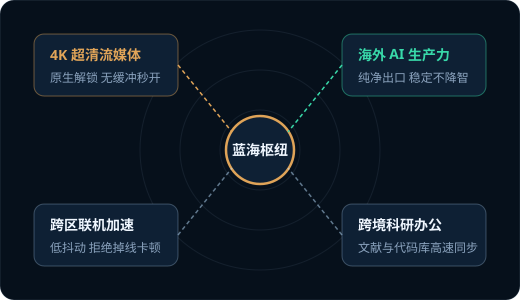

多入口冗余专线，晚高峰不掉速
核心节点采用深海骨干直连与智能故障转移机制，当单条公网链路出现拥堵或抖动时，系统在毫秒级无缝切换备用通道，保障晚间 20 点至 24 点依旧流畅。
专为严苛的跨境科研、海外 AI 协作与 4K 超清流媒体打造。蓝海加速采用智能分流与多入口冗余调度，即便在晚高峰拥堵时段，依然保持低抖动、零丢包的精密航行体验。
摒弃超售与不稳定中转，以工程级的路由调度与纯净出口标准，确保每一次连接都可预测、低延迟。

核心节点采用深海骨干直连与智能故障转移机制，当单条公网链路出现拥堵或抖动时，系统在毫秒级无缝切换备用通道，保障晚间 20 点至 24 点依旧流畅。

全线支持现代轻量化加密协议，在公共无线网络与复杂跨境环境中有效抵御流量特征嗅探。服务端不记录任何访问历史、解析记录与原始流量内容。

提供全平台官方轻量专属客户端，无需折腾第三方客户端或手动导入订阅链接。同一账号在办公电脑、手机与平板间登录即可自动同步节点列表，安装使用更方便。
普通廉价中转节点经常因为出口地址被污染而触发风控验证、画质受限或账号封禁风险。蓝海加速持续维护高质量住宅与商宽级出口池，针对主流视频平台与前沿 AI 对话引擎进行专项路由优化，实现真正的极速秒开。
获取优惠并解锁全节点
选择对应操作系统获取蓝海加速推荐客户端，登录后自动同步最新全球航线与分流规则。
适用 Windows 10 及以上系统。内置智能分流与虚拟网卡模式，支持开机自启与一键测速。
适用 Android 15 及以上系统。针对移动网络切换深度优化，后台低功耗稳定保活。
下载海外 Nextin 客户端，登录账号请联系在线客服获取。兼容苹果手机与平板设备。
全系列系统通用，原生适配苹果芯片与英特尔芯片设备，轻量静默运行不占内存。
全系套餐均包含全球主力海缆节点，无隐藏限速条款。主力月付套餐原价 25 元，新人注册 8 折仅需 20 元。
原价 25 元，新人注册 8 折仅需 20 元
原价 48 元，新人注册 8 折实付 38 元
原价 88 元，新人注册 8 折实付 70 元
连续稳定的晚高峰表现与纯净出口，是蓝海加速保持高续费率的核心原因。
★★★★★“平时每天都要拉取海外代码仓库并调用多个 AI 接口，之前换过好几家都会在晚上九点开始丢包。切到蓝海加速的东京和新加坡节点后，连续三个月没出现过断连，原价 25 元折后 20 元性价比确实扎实。”
★★★★★“看 4K 视频最怕拖动进度条一直转圈，蓝海加速的香港专线基本是点开就缓冲到位。苹果手机配合 Nextin 客户端，找客服拿账号几分钟就弄好了，家里电脑和手机都能同时挂着。”
★★★★★“写论文查外文文献和看公开课非常稳，之前在学校宿舍老连不上，看了官网的线路诊断指南才发现是校园网限制了端口。按建议切了专线节点后立马恢复正常，推荐给同实验室好几个同学了。”
如果您在注册、客户端安装或地区网络适配方面遇到疑问，可以先查阅以下说明。
直接点击本页任意“立即注册”或“获取优惠”按钮前往官方注册页，使用默认邀请码完成账号注册后，选购月付主力套餐（原价 25 元）即可自动触发 8 折优惠，实付仅需 20 元。
部分局域网管理员会主动阻断代理协议端口，也可能是公网线路受到跨境干扰。建议先查看我们的当前地区代理适用环境诊断指南，快速排查属于哪一类限制并对应解决。
苹果手机或平板用户请先安装海外 Nextin 客户端，登录所需账号及节点同步方式请联系官网在线客服获取，全程提供中文图文指导，几分钟即可完成配置。
不需要。为了避免繁琐配置与第三方订阅频繁失效的问题，蓝海加速暂不提供第三方订阅链接，推荐直接下载官网专属客户端使用——安装后登录账号即可一键自动同步全球高速节点与智能分流规则，更加方便省心。